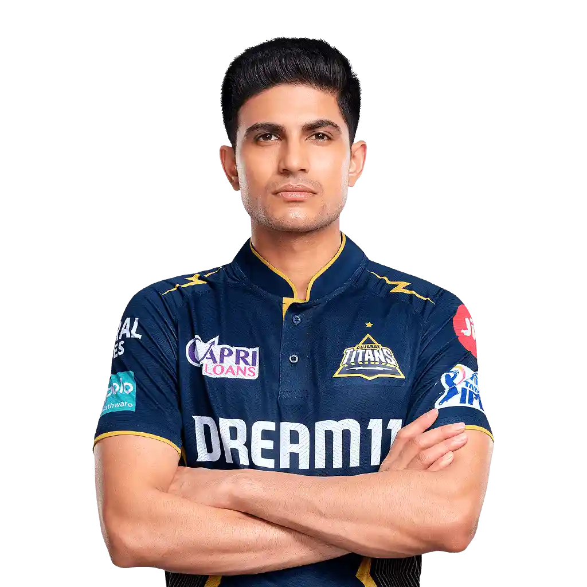
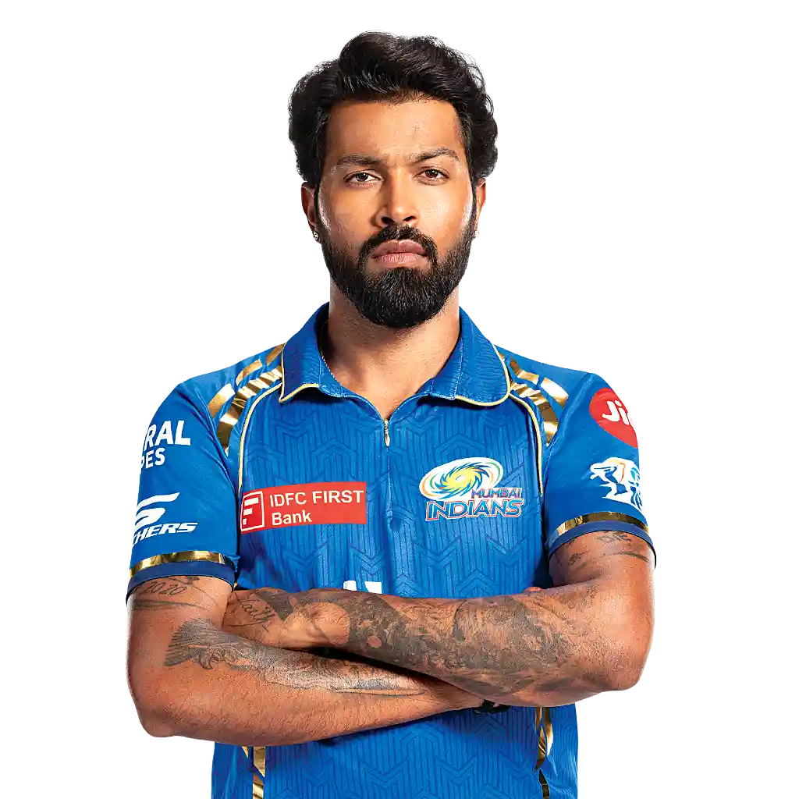
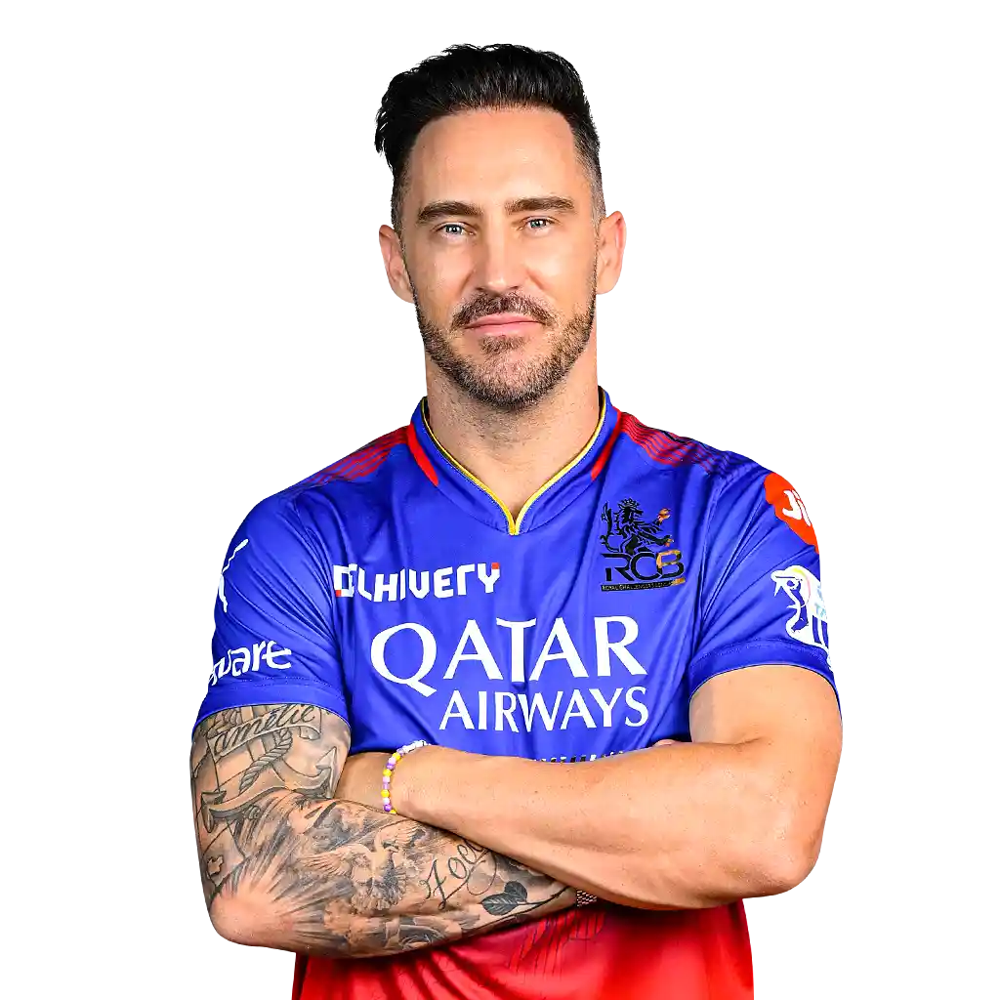
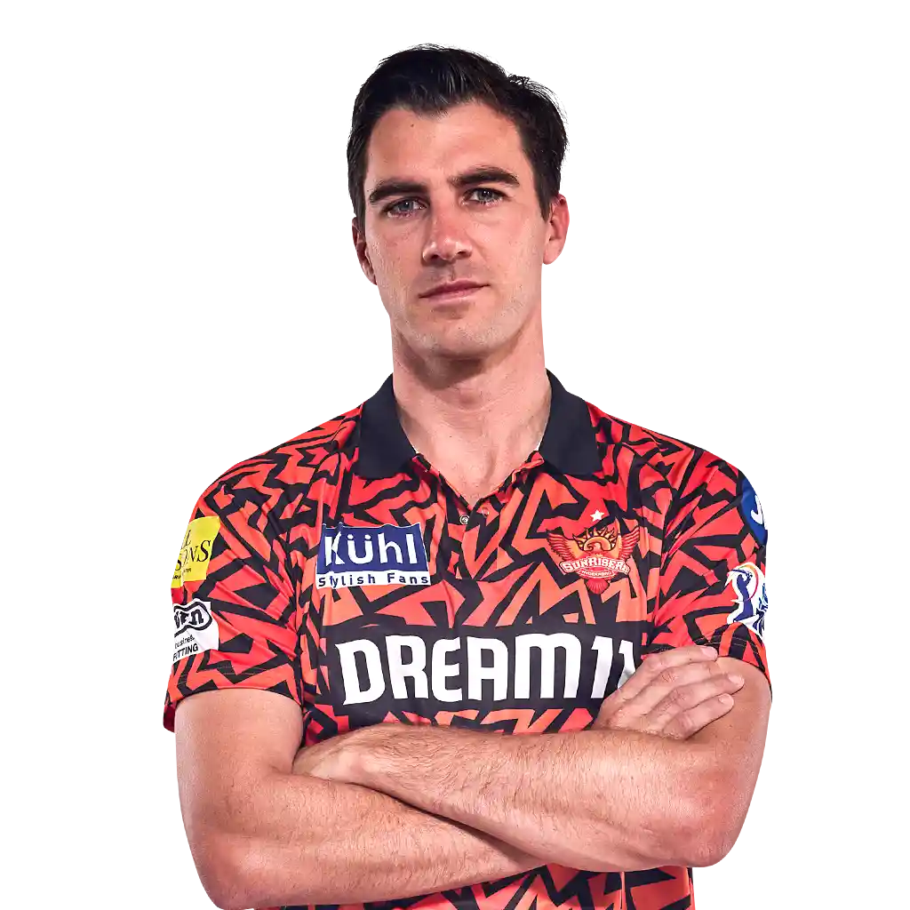

IPL T20 Teams
1. Chennai Super Kings (CSK)

Chennai Super Kings (CSK) is an Indian professional cricket franchise
based in Chennai, Tamil Nadu. The team competes in the Indian Premier
League (IPL) and was one of the eight franchises incorporated when the
league was established in 2008..
2. Delhi Capitals (DC)

Delhi Capitals, formerly Delhi Daredevils, are a professional franchise
cricket team based in Delhi that plays in the Indian Premier League
(IPL). The franchise is jointly owned by the GMR Group and the JSW
Sports. The team's home ground..
3. Gujarat Titans (GT)

Gujarat Titans (GT) are a professional franchise cricket team based in
Ahmedabad, Gujarat, India. The Titans compete in the Indian Premier
League (IPL). Founded in 2021, Gujarat Titans' home ground is Narendra
Modi Stadium in Motera..
4. Kolkata Knight Riders (KKR)

Kolkata Knight Riders (KKR) are a professional franchise cricket team
representing the city of Kolkata in the Indian Premier League. The
franchise is owned by Bollywood actor Shah Rukh Khan, actress Juhi
Chawla, and her spouse Jay Mehta..
5. Lucknow Super Giants (LSG)

Lucknow Super Giants (LSG) is a professional franchise cricket team
based in Lucknow, Uttar Pradesh that competes in the Indian Premier
League (IPL). Founded in 2021, the team plays its home matches at the
Ekana Cricket Stadium in Lucknow..
6. Mumbai Indians (MI)

Mumbai Indians are a professional franchise cricket team based in
Mumbai, Maharashtra, that competes in the IPL. Founded in 2008, the team
is owned by India's biggest conglomerate, Reliance Industries, through
its 100% subsidiary..
7. Punjab Kings (PBKS)

Punjab Kings (PBKS), formerly Kings XI Punjab (KXIP), is a professional
franchise cricket team based in Mullanpur, Mohali, Punjab, that plays in
the IPL. The franchise is jointly owned by Mohit Burman, Ness Wadia,
Preity Zinta and Karan Paul Indian franchise..
8. Rajasthan Royals (RR)

Rajasthan Royals (often abbreviated as RR) are a professional franchise
cricket team based in Jaipur, Rajasthan, that competes in the Indian
Premier League (IPL). Founded in 2008 as one of the initial eight IPL
franchises, the team is owned by Manoj Badale and..
9. Royal Challengers Bengaluru (RCB)

Royal Challengers Bangalore (RCB), officially known as Royal Challengers
Bengaluru, are a professional franchise cricket team based in Bangalore,
Karnataka, competing in the IPL. Founded in 2008 by United Spirits, the
team is named after the company's..
10. Sunrisers Hyderabad (SRH)

Sunrisers Hyderabad (stylised as SunRisers Hyderabad, abbr. SRH) are a
professional franchise cricket team based in Hyderabad, Telangana,
India, that plays in the IPL. The franchise is owned by Kalanithi Maran
of the SUN Group and was founded in 2012..